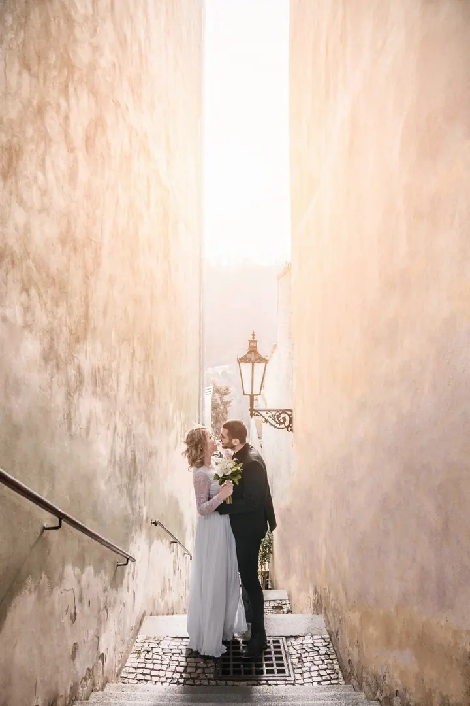
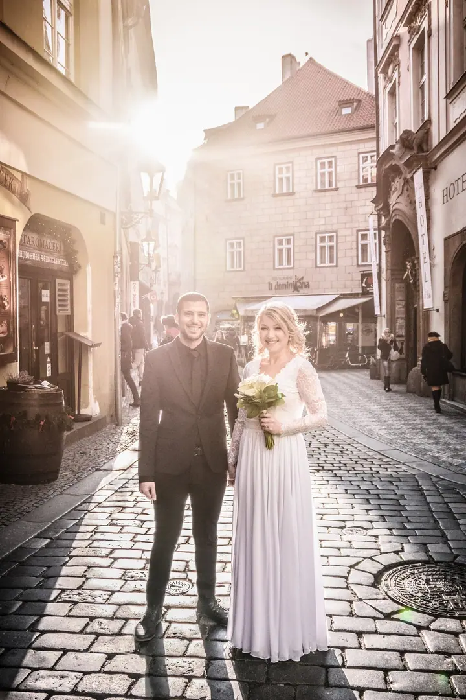

jedna
Svatby
Celodenní autentická a osobitá reportáž o vás a vašich blízkých, kterou fotíme ve dvou. Fotíme jen jednu svatbu za víkend, aby každá dostala naši plnou péči.

Svatební fotografka v duu s Radkem · Praha

Jmenuji se Alice Charvátová a spolu s Radkem fotíme svatby, páry a rodiny. Hledáme dobré světlo a z celého dne skládáme upřímnou reportáž bez aranžovaných emocí.
Více o mně
Co fotím
jedna
Celodenní autentická a osobitá reportáž o vás a vašich blízkých, kterou fotíme ve dvou. Fotíme jen jednu svatbu za víkend, aby každá dostala naši plnou péči.
dvě
Příjemná procházka, při které máte chvíli jen pro sebe. Můžete se obejmout, trochu zablbnout nebo se rozběhnout po louce.
tři
Spontánní fotky celé rodiny bez strojených úsměvů. Rádi fotíme i páry, které se k nám vracejí už s dětmi.
Portrétní focení, při kterém hledáme dobré světlo a vaši přirozenou náladu. Ozvěte se a domluvíme se na tom, co si představujete.
Fotografie je otisk jedinečného okamžiku v čase.


Za objektivem
Jsme Alice a Radek Charvátovi, svatební fotografové z Prahy. Společně zpíváme, tvoříme a žijeme, a fotografie je naše láska. Kromě svateb se věnujeme také portrétům a rodinnému focení.
Na svatbách se snažíme vytvořit autentickou, ale zároveň osobitou uměleckou reportáž. Díváme se na váš příběh ze dvou úhlů pohledu, takže nám nic neuteče. Nečekejte od nás emoce na oko ani spoustu aranžovaných fotek, ceníme si upřímnosti a spontánnosti.
Nechceme být dodavatelé, chceme být kamarádi, na které se můžete spolehnout. Nezaskočí nás déšť, tma ani rozbitý foťák a pro dobrou fotku jsme už lezli na stromy nebo stáli po kolena v ledovém horském potoce.
Alice
Pošlete nám datum a místo svatby, počet hostů a svá zvláštní přání. Ozvat se můžete e-mailem, telefonem i přes WhatsApp.
Potkáme se osobně nebo online, poznáme se a rádi pomůžeme s harmonogramem. Doporučíme vám i kvalitní dodavatele.
Nejraději jsme s vámi celý den, přibližně 12 hodin. Většinu času fotíme reportáž, kdy o nás ani nebudete vědět, a párové focení pojmeme jako příjemnou procházku.
První fotky máte do 2 dnů, všechny upravené do 6 týdnů ve webové galerii. Pomůžeme vám i s tiskem fotek a fotoknih.
Portfolio
Fotografie jsou ilustrační
Otázky
Nejraději máme celodenní focení, tedy přibližně 12 hodin, abychom zachytili celý váš příběh. Pro malé nebo mimosezónní svatby nabízíme i kratší focení.
Z celodenního focení dvou fotografů dostanete minimálně 400 fotek. Přesné počty ale neřešíme, odevzdáme vám všechny fotky, které byste podle nás rádi měli.
První fotky od nás dostanete do 2 dnů od svatby, všechny do 6 týdnů. Jsou pečlivě vybrané, upravené a vyretušované, v digitální podobě ve formátu JPEG.
Rozhodně obojí. Každé fotce sluší jiná úprava a některé odevzdáváme v obou variantách, většinu ale dostanete v barvě.
Napište pár vět o tom, co si představujete. · +420 731 007 607